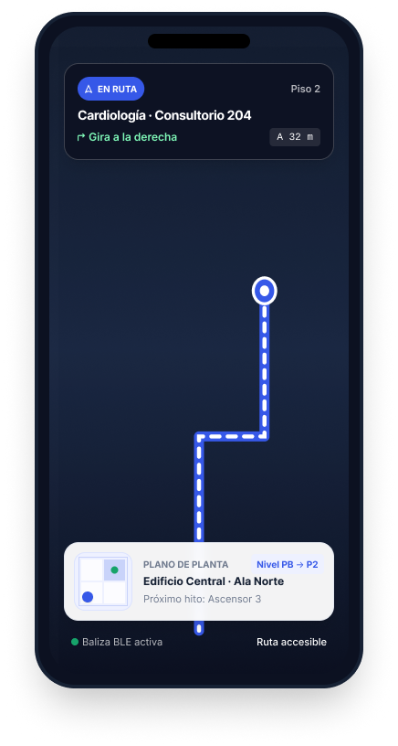

Rumbo-AR ayuda a pacientes y acompañantes a encontrar consultorios, servicios y áreas dentro de la clínica mediante mapas interiores, rutas guiadas y realidad aumentada.

Imagen no disponible
Las clínicas de gran tamaño pueden contar con múltiples pisos, consultorios, laboratorios, farmacias y áreas de atención. Para quienes visitan el establecimiento por primera vez, encontrar un destino puede generar pérdida de tiempo, recorridos innecesarios y consultas frecuentes al personal.
Búsqueda rápida de consultorios, médicos, laboratorios y áreas específicas sin perder tiempo preguntando.
Trazo continuo paso a paso sin dudas en cruces de pasillos o intersecciones complejas dentro del edificio.
Avisos sonoros o visuales en pantalla anticipando cambios de nivel, pasajes y llegada al consultorio.
Modo accesible universal: trayectorias 100% libres de escalones y desniveles para sillas de ruedas y coches.
Descongestiona los mesones de admisión y permite al personal médico enfocarse plenamente en la atención.
Mapeo interior intuitivo: carga planos CAD, define recintos y actualiza balizas lógicas sin fricciones.
Comunica al instante obras en pasillos, reubicación temporal de consultorios o cierres de mantenimiento.
Métricas anónimas de desplazamientos, áreas con mayor demanda de orientación y tiempos de flujo.
Un proceso guiado en cuatro pasos continuos que acompaña al paciente desde el acceso de la clínica hasta la puerta del consultorio.
La aplicación utiliza referencias de posicionamiento disponibles en la clínica para determinar tu ubicación aproximada.
Busca un consultorio, especialidad, laboratorio, farmacia u otro servicio con buscador predictivo instantáneo.
Visualiza el recorrido en el mapa y recibe indicaciones durante tu desplazamiento por pasillos y ascensores.
La aplicación confirma de forma precisa cuando has llegado a la sala o ventanilla seleccionada.
Rumbo-AR combina navegación guiada en interiores, planos de planta inteligentes y realidad aumentada para brindar una orientación autónoma y sin estrés en centros de salud.
Microbalizas Bluetooth de bajo consumo que determinan la ubicación milimétrica dentro de la clínica sin depender de señal GPS.
Visualización vectorial de plantas, consultorios y servicios con cambio ágil entre niveles y filtros de especialidades médicas.
Avisos anticipados de giros en 90°, aproximación a ascensores y llegada exacta a la puerta del consultorio o ventanilla.
Métricas de flujo, congestión de pasillos y tiempos medios de llegada para que la administración optimice sus instalaciones.
Tecnología indoor modular diseñada para la dinámica espacial de policlínicos, sanatorios y redes hospitalarias.
Visualiza pisos y destinos disponibles con planos esquemáticos vectoriales optimizados para lectura veloz.
Encuentra consultorios, especialidades y servicios mediante etiquetas y categorizaciones temáticas.
Obtén un recorrido adaptado al espacio real disponible, respetando vanos, puertas y pasillos sin atravesar paredes.
Recibe indicaciones visuales durante el recorrido proyectando flechas luminosas directamente sobre la vista real.
Adapta la navegación a tus necesidades activando rutas exclusivas con rampas reglamentarias y elevadores obligatorios.
Si te desvías accidentalmente, Rumbo actualiza tu recorrido en menos de un segundo sin reiniciar la navegación.
Elige el plan que mejor se adapte al tamaño de tu organización, número de sedes y necesidades de navegación.
Para clínicas pequeñas y centros de atención única.
Para clínicas en crecimiento y centros multiespecialidad.
Para redes de clínicas, complejos hospitalarios y campus médicos.
Validación continua con usuarios finales, personal asistencial y administradores de infraestructura hospitalaria.
"Contar con indicaciones claras dentro de la clínica puede reducir la incertidumbre al buscar consultorios y servicios."
"Una herramienta de orientación puede ayudar a disminuir las consultas repetitivas relacionadas con ubicaciones y recorridos."
"La capacidad de adaptar rutas sin escaleras brinda una experiencia de autonomía fundamental para personas con movilidad reducida."
Somos un equipo de estudiantes de Ingeniería de Software enfocado en diseñar una solución que combine arquitectura de software, experiencia de usuario y tecnologías de navegación indoor.
Espacio reservado para video introductorio de los fundadores e ingenieros del proyecto.
Respuestas a las inquietudes más comunes sobre la implementación, tecnología y funcionamiento de Rumbo-AR.
Sí, funciona mediante tecnología de posicionamiento indoor y radiobalizas BLE que no dependen de satélites en interiores, garantizando precisión métrica incluso en sótanos y pabellones cerrados.
No siempre. Si tu clínica ya cuenta con puntos de acceso Wi-Fi compatibles o balizas BLE existentes, Rumbo-AR puede integrarse lógicamente con tu infraestructura previa reduciendo costos de despliegue.
Sí. La aplicación ofrece modo de plano vectorial 2D interactivo con guía giro a giro convencional, ideal para dispositivos sin sensores AR o para usuarios que prefieran vista en planta.
Totalmente. Cuenta con cálculo de trayectorias con estándar de accesibilidad universal libre de escaleras o desniveles, priorizando rampas normadas y elevadores para pacientes en silla de ruedas o con movilidad reducida.
Sí. Rumbo-AR cuenta con detección automática y manual de cambios de nivel mediante ascensores y escaleras, transicionando los mapas de piso de manera fluida y continua.
Descubre cómo Rumbo-AR puede adaptarse a la distribución y necesidades de orientación de tu establecimiento.
Mejora la orientación de pacientes y visitantes dentro de tu clínica con Rumbo-AR.